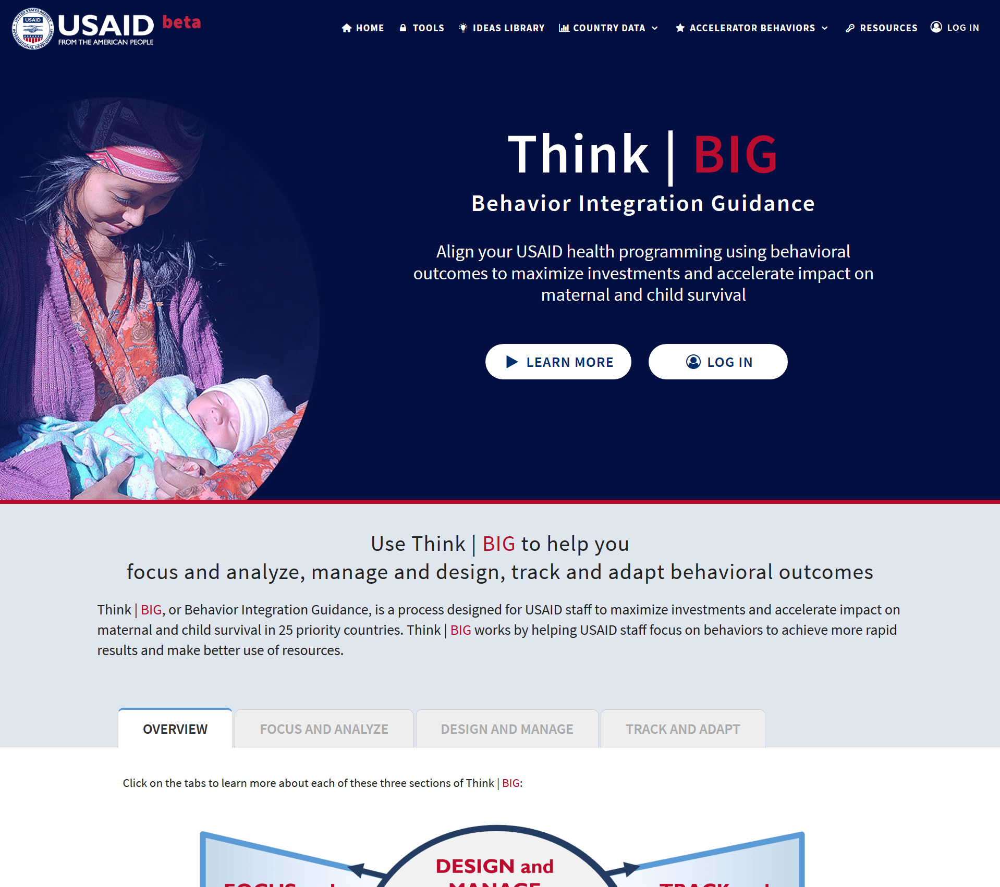
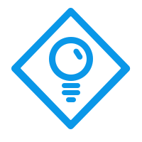

Current Work Samples
Tennis central
Sonjara built the Tennis Central web application for desktop, Android and iOS using Phone Gap technology allowing for rapid application development and delivering a beta version on all platforms within 6 months. Tennis Central is a place for tennis enthusiasts of all skill levels to connect, sharing their love for all aspects of tennis. It houses functionality for finding other tennis players and available matches based on geolocation, and allows members to track their scores, tennis progress, and upload photos; as well as improve their game with a carefully curated set of video instruction courses. I
Learning &
Travel
USAID Accelerate
Sonjara is the primary technology partner for a 5-year multi-million-dollar contract with the United States Agency for International Development (USAID) to help reduce the mortality rates of mothers and children under five in 25 priority countries around the world. Sonjara is working with behavioral science and global health experts to design and develop a set of online tools aiming to improve USAID’s strategies and practices that focus on behavior change. Sonjara has created online tools to facilitate the project, including interactive content-driven tools, maps, data visualisations and onboarding. Based on initial user inputs and stakeholder requests, Sonjara is designing UI prototypes and revising complex workflows using Adobe XD
Learning New Technologies
I transitioned from my travels in Asia to what was then called the Silicon Forest - Portland, Oregon. The internet was still relatively new and transforming everything. Learning on the job as a tech support agent and taking coursework at Portland State University, I decided to study educational technology. I moved to Virginia and received my Master's Degree at George Mason University in Instructional Design and Development. Here I built a foundation in learning and design.TechnologY & International Development
An opportunity at the Academy for International Development in Washington, DC combined my love for international travel, my passion to do good in the world, and my new found technology skills. I spent 5 years working on exciting USAID funded ICT-in-Education projects that took me to India, Jamaica, Jordan, Indonesia, Uganda and Kenya. learning &
Consulting
By the mid-2000s, I was ready to give my passport a rest. I took an opportunity at Booz Allen Hamilton to work as a Senior Learning Strategist. I designed facilitator-led training, managed e-learning vendors and collaborated with bright and ambitious colleagues.learning, Design & International development
By 2008, an opportunity to go back working on USAID-funded projects came my way. As part of a woman-owned, small business, I was able to hone my skills in not only in instructional design, but also HTML/CSS, user interface design and technical project management. I've worked on projects focused on Gender Equality, Wildlife Crime, Water, Biodiversity, Sex Education, and Maternal and Child Health. During this time I also become a mother, a home owner and a pet owner.looking for new opportunities
My goal is to find new opportunities that use my skills, my experience, and enthusiasm. I would love to be part of a dynamic and innovative design team working to help solve some of the world's most pressing and difficult problems.